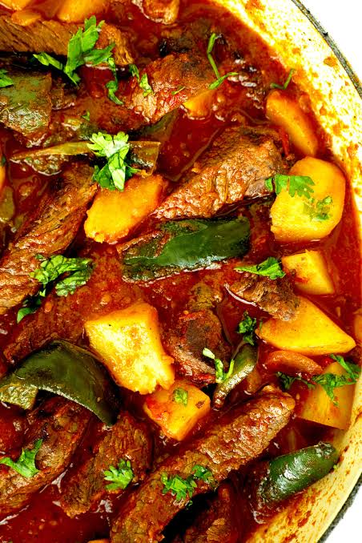

Bisteck Ranchero

Descripcion
el bisteck ranchero es una reseta de la cocina mexicana, haciendo enfasis en una convinacion de texturas y aromas.
una receta tradicional que al pasar de los años se ha ganado el cariño de los comensales, la gente describe esta receta como un plato de otro universo
Ingredientes
- 3 jitomates picados
- 1 cebolla mediana
- 2 chiles jalapeños
- 250 Gr de bistec de res
- Aceite
- Sal y pimienta al gusto
- Finas especias
Pasos
- calienta un poco de aceite en una cazuela a fuego medio
- Agrega el bistec sazonado con sal y pimienta
- cocine la carne hasta que suelte sus jugos y empiece a dorarse
- Añade el ajo y la cebolla, y mezcla hasta que la cebolla este transparente
- incorpora los cubos de papa y las rajas de chile jalapeño
- Agrega los jitomates picados y un chorrito de agua si deseas mas caldo
- Tapa la cazuela y cocina a fuego bajo por 15 a 20 minutos hasta que las papas esten suaves y la carne tierna
Home